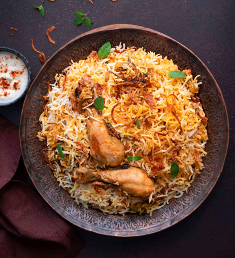
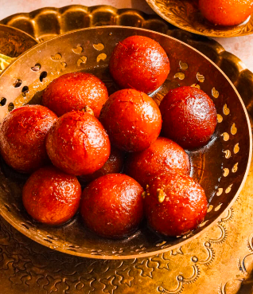
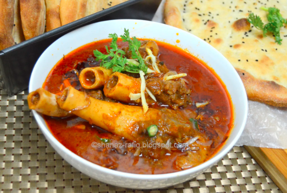
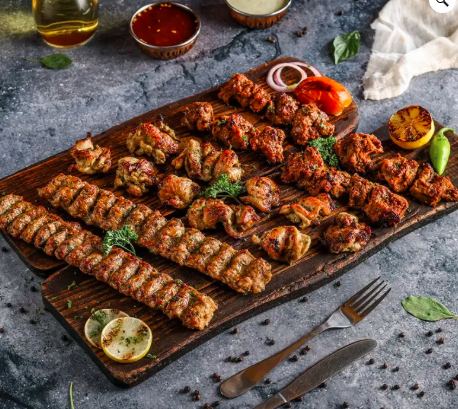
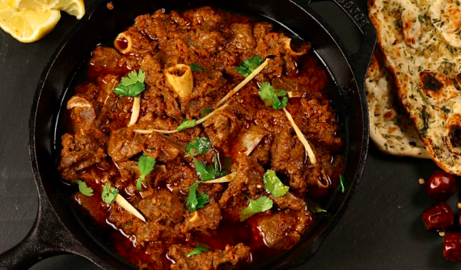
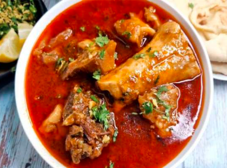
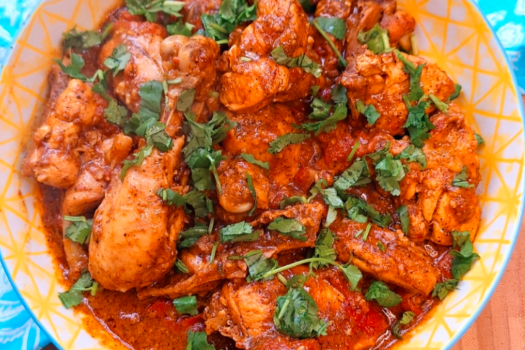

Pakistani Cuisine
Pakistani cuisine is a rich blend of diverse cultural traditions, flavors, and spices. Influenced by Central Asian, Middle Eastern, and South Asian culinary heritage, the food of Pakistan varies from region to region, offering both hearty meals and flavorful snacks. From the spicy biryani of Karachi to the savory chapli kebabs of Peshawar, each dish reflects the unique taste of its area. In Punjab, butter chicken and saag with makki di roti are traditional favorites, while Sindh is known for sindhi biryani and flavorful curries. Street food such as golgappay (pani puri), samosas, and pakoras are popular across the country, especially during Ramadan and festive occasions. No meal is complete without a sweet treat like gulab jamun, jalebi, or the creamy kheer. Pakistani food is not just about taste—it's about tradition, hospitality, and bringing people together. The use of spices like cumin, coriander, turmeric, and garam masala adds depth and warmth to every dish, making Pakistani cuisine a flavorful and unforgettable experience.
Some famous foods of Pakistan:
Biryani
Biryani is one of the most popular and beloved dishes in Pakistan, as well as in many parts of South Asia. It is a rich, flavorful, and aromatic dish made with rice, meat (such as chicken, mutton, or beef), and a blend of spices. The origins of Biryani can be traced back to Persian and Mughal influences, where it was initially created as a dish to serve royalty and nobility. Over time, it spread across the Indian subcontinent, evolving into various regional versions, each with its unique twist.
In Pakistan, Biryani holds a special place in culinary traditions and is often served at weddings, family gatherings, festive occasions, and even in daily meals. Karachi-style Biryani is known for its bold flavors, vibrant color, and spicy kick, while Lahori Biryani offers a slightly milder, yet deeply aromatic taste. Some versions include potatoes, boiled eggs, and fried onions, adding layers of flavor and texture.
The preparation of Biryani is often considered an art — from marinating the meat to layering the rice and sealing the pot for dum cooking (slow steam cooking) to let the flavors infuse. The irresistible aroma of Biryani — with hints of saffron, cardamom, cloves, and bay leaves — is enough to make anyone’s mouth water.

Image: Chicken Biryani
Gulab Jamun
Gulab Jamun is one of the most beloved and iconic desserts in Pakistan. This indulgent sweet treat is made from deep-fried dough balls, traditionally prepared from milk solids, and soaked in a fragrant, sugar-based syrup. The name "Gulab Jamun" comes from the Persian word "gulab," meaning "rose," referring to the aromatic rosewater used in the syrup, and "jamun," which is a type of fruit that resembles the shape and size of the fried balls.
Soft, juicy, and rich in flavor, Gulab Jamun is a must-have at weddings, festivals like Eid, family celebrations, and even on regular dinner tables as a sweet ending to a hearty meal. The golden-brown dumplings are often made using khoya (reduced milk), flour, and sometimes a hint of cardamom or saffron, adding a warm, luxurious depth to the dessert.
Once fried to perfection, the hot balls are immediately soaked in warm syrup flavored with rosewater, cardamom, and sometimes kewra or lemon juice to balance the sweetness. The longer they rest in the syrup, the more they absorb, becoming melt-in-your-mouth soft and irresistibly sweet.

Image: Gulab Jamun
Nihari
Nihari is a traditional and rich stew that holds a special place in the hearts of Pakistanis, particularly in the northern regions, and is commonly enjoyed during cold weather or festive occasions. This flavorful dish is made by slow-cooking beef or mutton with a blend of aromatic spices, creating a hearty, flavorful gravy. The name "Nihari" comes from the Arabic word "Nahar," meaning "day," which signifies the dish's popularity as a breakfast meal, often enjoyed with naan or rice.
Historically, Nihari was considered a royal breakfast during the Mughal era, served to kings and noblemen after Fajr (early morning) prayers. The dish’s rich, warming qualities made it an ideal meal to start the day, especially in colder climates. Over time, Nihari found its way into the homes of the general population and became a staple of Pakistani cuisine, particularly in cities like Lahore and Karachi, where it is served in countless eateries and homes alike.
One of the defining features of Nihari is its long cooking time, often simmered overnight to allow the meat to become exceptionally tender and the spices to fully develop their deep, robust flavor. Common spices used in Nihari include fennel, ginger, cardamom, cloves, cinnamon, and chili powder, along with a key ingredient called Nihari masala — a carefully crafted spice blend that varies slightly between households and restaurants.

Image: Nihari
BBQ
BBQ (Barbecue) holds a special place in Pakistani cuisine, especially when it comes to gatherings, festivals, and celebrations. It’s a beloved cooking method that transforms marinated meats into smoky, tender, and juicy dishes. BBQ in Pakistan typically involves grilling or roasting meats such as chicken, beef, mutton, and fish, often seasoned with a variety of spices and herbs. These meats are usually marinated in yogurt, lemon, ginger, garlic, and a mix of traditional Pakistani spices like cumin, coriander, garam masala, and red chili powder, which not only tenderize the meat but also infuse it with deep, rich flavors.
BBQ is more than just a style of cooking — it’s a cultural experience. Whether it's a family get-together on a rooftop, a beach picnic, or a late-night roadside meal, BBQ is a central part of how Pakistanis celebrate and bond. One of the most iconic forms of Pakistani BBQ is the seekh kebab — minced meat mixed with spices, molded onto skewers, and grilled to perfection. Other popular BBQ items include chicken tikka, malai boti, chapli kebab, and beef boti, each offering a unique taste based on regional preferences and spice levels.
In Pakistan, cities like Lahore, Karachi, and Peshawar are famous for their street-style BBQ joints that attract crowds every night. Each region has its specialty — Lahore is known for its spicy and bold flavors, Karachi brings a balance of tangy and fiery taste, while Peshawar often features simpler, salt-and-pepper rubs that highlight the quality of the meat.

Image: BBQ
Mutton
Mutton, referring to the meat of an adult sheep, is a staple in Pakistani cuisine and is cherished for its rich, hearty flavor and tender texture. Unlike lamb, which comes from a younger sheep, mutton has a stronger, more robust taste that makes it particularly suited for slow-cooked dishes. It is widely used in a variety of traditional Pakistani dishes, especially in curries, stews, and barbecued meats, and holds a special place in both everyday meals and festive occasions.
Mutton is an essential component of many classic Pakistani dishes such as Mutton Korma, Mutton Karahi, Mutton Biryani, and Mutton Pulao. These dishes are often slow-cooked to allow the meat to absorb the flavors of carefully blended spices like cinnamon, cloves, cardamom, cumin, and black pepper. The slow cooking process breaks down the tougher fibers in the meat, making it incredibly tender and flavorful.
During Eid-ul-Adha, mutton becomes the centerpiece of celebrations in many households. It is prepared in large quantities and shared with family, friends, and neighbors, showcasing the spirit of generosity and togetherness. From spicy kebabs at street-side stalls to elaborate dishes served at weddings and family dinners, mutton reflects both the rich culinary traditions and the warmth of Pakistani hospitality.

Image: Mutton
Paye
Paye is a traditional and flavorful dish in Pakistani cuisine, made from the trotters (hooves) of goat, beef, or sometimes buffalo. It is a delicacy often enjoyed during special occasions and particularly in winter, when its rich and hearty nature provides comfort and warmth. Paye is a slow-cooked dish, with the meat simmered for several hours until it becomes tender, falling off the bone and infused with the aromatic flavors of the spices used in the cooking process.
This iconic dish is known not only for its distinct taste but also for its gelatin-rich texture, which comes from the collagen in the bones and joints. The gravy is typically thick, glossy, and bursting with deep umami flavors, thanks to a mix of traditional spices such as turmeric, black pepper, cloves, cardamom, cinnamon, garlic, and ginger. Some recipes also include a touch of yogurt or onion paste to enhance the richness of the curry.
Paye is traditionally eaten for breakfast, especially in cities like Lahore and Peshawar, where early morning eateries serve it with fresh naan or khameeri roti. The dish is often accompanied by lemon wedges, sliced green chilies, and fresh coriander for added freshness and heat. It’s a beloved comfort food for many Pakistanis, often served during weekends, family gatherings, and festive mornings like Eid.

Image: Paye
Chicken Karahi
Chicken Karahi is one of the most popular and beloved dishes in Pakistani cuisine, known for its bold flavors, aromatic spices, and rich, savory taste. Named after the traditional cooking vessel called a "karahi" (a wok-like pan), this dish is made by cooking chicken in a highly spiced gravy, often with fresh tomatoes, green chilies, garlic, ginger, and a variety of traditional Pakistani spices.
What sets Chicken Karahi apart is its simple yet robust preparation, where the ingredients are sautéed and simmered together to create a thick, flavorful masala that coats the chicken beautifully. The use of freshly ground black pepper, coriander seeds, and red chili flakes gives it a distinctive, slightly smoky kick. The gravy is usually reduced to a semi-dry consistency, enhancing the intensity of flavors.
One of the defining characteristics of Chicken Karahi is that it's cooked without any pre-made base like onion paste or yogurt, unlike many other South Asian curries. Instead, the natural tanginess of tomatoes forms the base, balanced by the heat of chilies and the aromatic depth of whole spices. A final garnish of julienned ginger, chopped coriander, and a squeeze of lemon juice adds a refreshing contrast to the rich curry.

Image: Chicken Karahi